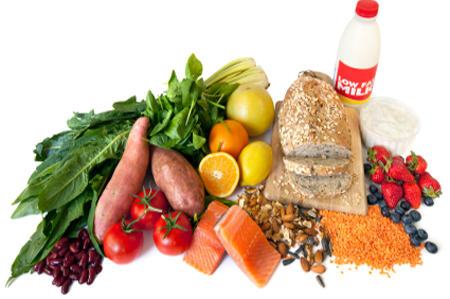
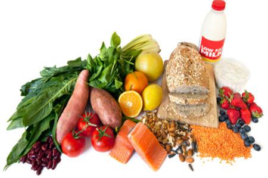
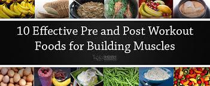
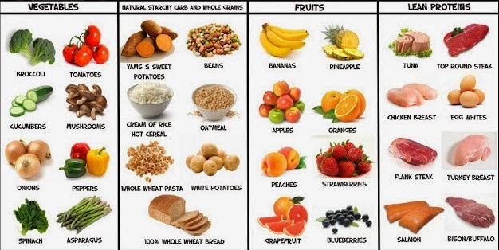
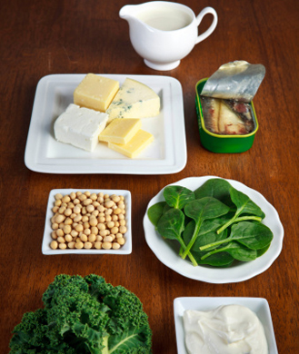
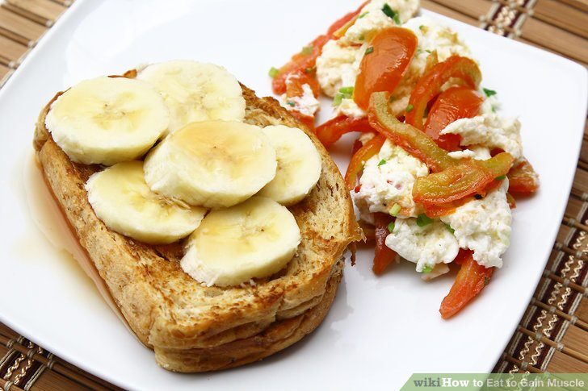

YOU’RE NOT 12 anymore. You know that a hot dog or two is fine every now and then, and that you can’t make them, or any other processed meats, a regular part of your daily diet. And you're probably also aware that daily consumption of whole grains—like oatmeal, wild and brown rice, wheat, and barley—can drop risk factors for developing a bunch of nasty conditions like heart disease, stroke, and diabetes.But if you don't already believe it, here's another reason to buy in. Those two food categories—processed meats and whole grains—are closely tied to risk of colorectal cancer, or cancer of the colon or rectum, according to a recent report from the American Institute for Cancer Research that analyzed 99 studies and health stats on more than 29 million people. Foods like hot dogs and bacon significantly upped the risk, while eating three servings, or about 90g, of whole grains each day can drop the chance by 17%. Other factors that increase risk include eating more than 500g of red meat a week, being overweight, and drinking two more more alcoholic beverages a day. To help slash risk, eat whole grains and also exercise regularly, and eat foods high in vitamin C like strawberries and spinach. "Colorectal cancer is one of the most common cancers, yet this report demonstrates there is a lot people can do to dramatically lower their risk," said lead author Edward L. Giovannucci, M.D., Sc.D., professor of nutrition and epidemiology at the Harvard TH Chan School of Public Health. "The findings from this comprehensive report are robust and clear: Diet and lifestyle have a major role in colorectal cancer."
OLIVE OIL HAS long been touted as one of the best ways to get heart-healthy fats in your diet. The Mediterranean diet staple is also tied to a bunch of other health benefits like protecting your brain against dementia and destroying cancer cells. Now, biochemists have scrutinized compounds from the helpful oil to find out why it also provides benefits like weight loss and prevention of type-2 diabetes.The new study, which was published in the journal Biochemistry, tested the olive-sourced compound called oleuropein. Researchers found that oleuropein helps the body produce more insulin, which helps regulate metabolism and allows cells to use sugar for energy, making you less likely to pack on pounds. They also discovered that the compound helps tamp down toxic levels of a hormone called amylin, which is found in folks with diabetes.


 
Other factors that increase risk include eating more than 500g of red meat a week, being overweight, and drinking two more more alcoholic beverages a day. To help slash risk, eat whole grains and also exercise regularly, and eat foods high in vitamin C like strawberries and spinach. "Colorectal cancer is one of the most common cancers, yet this report demonstrates there is a lot people can do to dramatically lower their risk," said lead author Edward L. Giovannucci, M.D., Sc.D., professor of nutrition and epidemiology at the Harvard TH Chan School of Public Health. "The findings from this comprehensive report are robust and clear: Diet and lifestyle have a major role in colorectal cancer."
Other factors that increase risk include eating more than 500g of red meat a week, being overweight, and drinking two more more alcoholic beverages a day. To help slash risk, eat whole grains and also exercise regularly, and eat foods high in vitamin C like strawberries and spinach. "Colorectal cancer is one of the most common cancers, yet this report demonstrates there is a lot people can do to dramatically lower their risk," said lead author Edward L. Giovannucci, M.D., Sc.D., professor of nutrition and epidemiology at the Harvard TH Chan School of Public Health. "The findings from this comprehensive report are robust and clear: Diet and lifestyle have a major role in colorectal cancer."
  